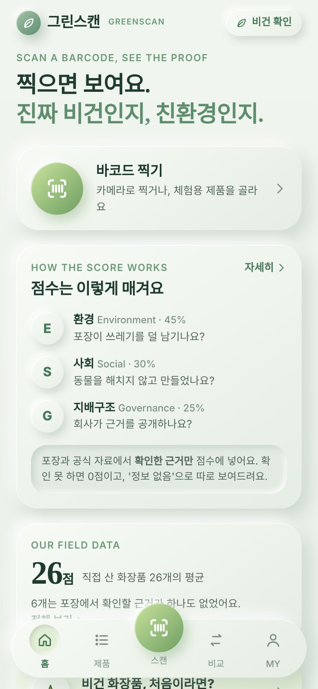
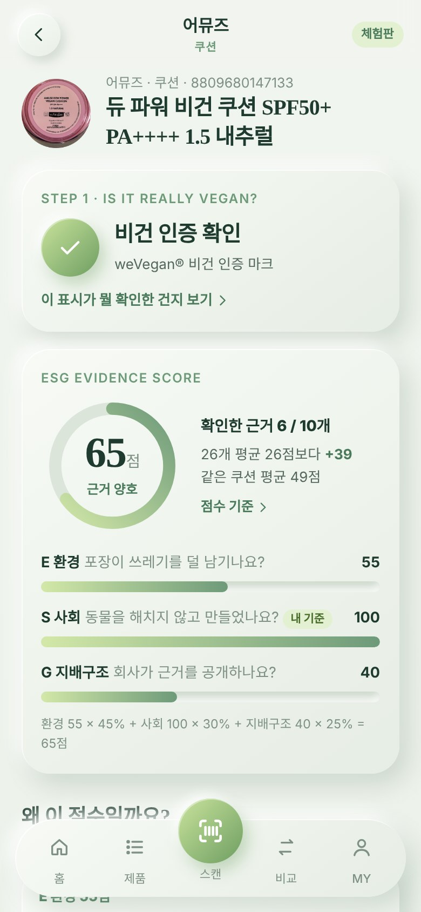
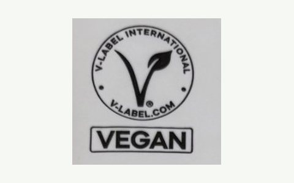
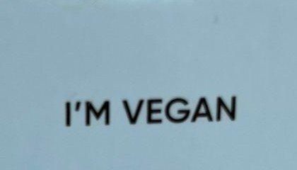
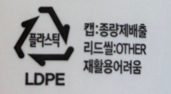
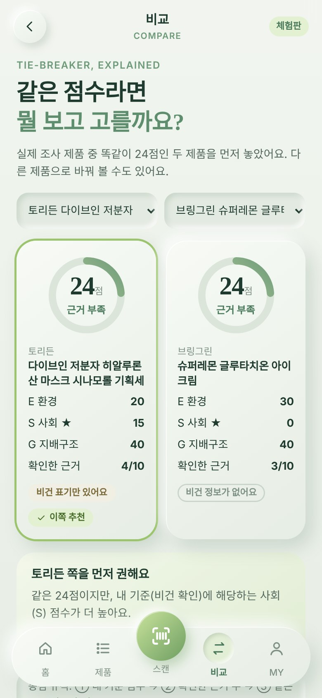

화장품 바코드를 찍으면 인증 마크와 포장 표시를 근거로 ESG 확인 점수를 보여드려요. 점수마다 왜 그렇게 나왔는지까지요.
설치 없이 폰 브라우저에서 바로 열려요. 가입 없이 3번까지 무료예요.


그린스캔 점수는 제품이 좋다, 나쁘다가 아니라 비건·친환경 근거가 얼마나 확인됐는지를 보여줘요. ESG를 몰라도 한 줄이면 돼요.
포장이 쓰레기를 덜 남기나요?
재활용 쉬움 25 · 리필 25 · 재생 원료 용기 20 · FSC 종이 15 · SOY INK 15
동물을 해치지 않고 만들었나요?
동물성 원료 없음 50 · 동물실험 안 함 50 (제3자 비건 인증으로 확인)
회사가 근거를 공개하나요?
인증 번호 조회 가능 40 · 재활용 등급 공개 30 · 브랜드 소통·정정 대응 30
비건 인증(weVegan®), 리필, FSC 종이, SOY INK는 확인했어요. 재활용 등급·재생 원료·브랜드 소통은 아직 확인 못 해서 비어 있어요.
비중(45·30·25)은 시안이에요. 소비자 설문에서 항목별 중요도를 물어 다시 정해요.
제3자 기관이 심사한 인증 마크와 브랜드가 직접 쓴 문구는 매장에서 거의 똑같아 보여요. 그린스캔은 둘을 나눠서 보여드려요.

인증 기관이 원료 출처, 동물실험, 교차오염까지 심사해요. 사회(S) 100점.

인증 기관 이름이 없어서 누가 확인했는지 알 수 없어요. 원료 항목에서 15점만 줘요.

비건 인증 핸드크림 3개 모두 튜브가 '재활용 어려움'이었어요. 그래서 비건과 친환경을 따로 봐요.
창업지원금으로 14개 브랜드 26개 제품을 사서 상자와 용기를 사진으로 확인했어요. 확인한 근거만으로 점수를 매기면 이렇게 나와요.
제3자 비건 인증 확인
비건 정보 자체가 없음
26개 평균 점수
확인할 근거가 하나도 없음

실제 조사한 토리든 마스크와 브링그린 아이크림은 똑같이 24점이에요. 비건을 중요하게 보면 비건 표기가 있는 토리든(사회 15점), 친환경을 중요하게 보면 FSC·SOY INK 공식 로고가 있는 브링그린(환경 30점)을 먼저 권해요. 기준을 정하지 않았다면 근거가 더 많이 확인된 쪽(4개 vs 3개)을 권해요.
직접 비교해 보기 ›'정보 없음'을 줄이려면 많은 사람이 포장 사진을 보내 줘야 해요. 포인트는 그 수고에 대한 보상이고, 바다·숲·동물 캠페인 기부나 재구매 할인에 쓸 수 있어요.
인증 마크·재활용 표시를 찍어 보내면 확인해서 점수를 채워요.
어떤 제품 정보가 필요한지 알 수 있어요. 하루 5번까지.
내 화장대 점검, 재구매·리뉴얼 알림, 근거가 더 많은 대체 제품 추천. 스캔·점수·근거 보기는 계속 무료예요.
가입 없이 3번까지 무료로 볼 수 있어요. 그다음엔 카카오·네이버로 로그인하면 계속 무료예요. 비밀번호는 저장하지 않아요.
아니요. 포장에서 확인할 근거가 없다는 뜻이에요. 그래서 '정보 없음'으로 따로 보여드리고, 사진 제보로 근거가 생기면 점수가 바뀌어요.
아니요. 광고·제휴는 점수와 상관없어요. 브랜드는 근거 자료를 내고 정정을 요청할 수만 있어요.
아니요. 체험판은 아무것도 서버로 보내지 않아요. 카메라 영상도 기기 안에서 바코드를 읽는 데만 써요. 개인정보 처리방침 보기
비건 소비가 큰 해외 사용자를 위해 영어 버전을 준비하고 있어요. 지금은 화면 제목에 영어를 함께 적어 두었어요.